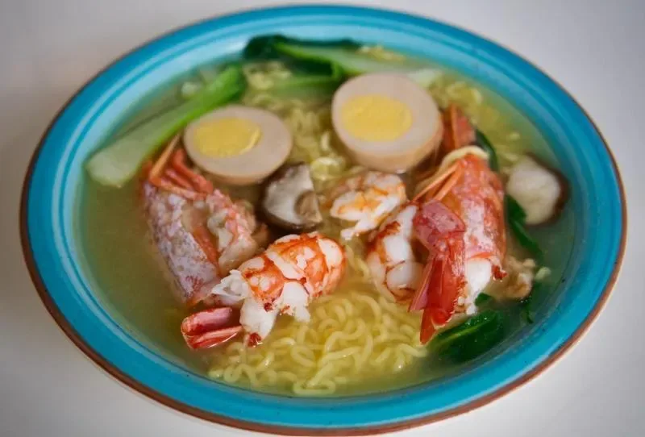

Via Vigevano 18 · Navigli · fino all’una
Un banco di legno,
una lampada,
il brodo che fuma.
Il nostro tonkotsu cuoce diciotto ore. Il vapore che vedi non è un effetto: alle 23 il bancone è così.
brodo in pentola da00ore00min

Ramen di gamberi · € 13
Le ciotole di stasera
Scritto col gesso,
cambia ogni sera.
Componi
La tua ciotola,
in tre gesti.
Diciotto ore
Alle sei del mattino
la pentola è già accesa.
06:00Ossa di maiale lavate, acqua fredda, fuoco alto.
09:00Schiumatura. Ogni mezz’ora, a mano.
13:00Entrano zenzero, aglio e cipollotto interi.
17:00Il brodo diventa bianco: emulsione, non panna.
20:00Tare di soia stagionata. Primo assaggio.
00:00Ultima ciotola. Si spegne e si ricomincia.


Dove
Via Vigevano 18,
Navigli.
- Mar–Dom
- 18:00 – 01:00
- Domenica
- anche a pranzo, 12:00 – 15:00
- Telefono
- +39 02 5550 1842
Dieci sgabelli al banco, niente prenotazione: si aspetta fuori, sotto la lampada, con una birra.
Ordina da asporto